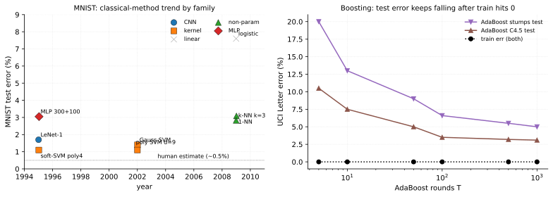
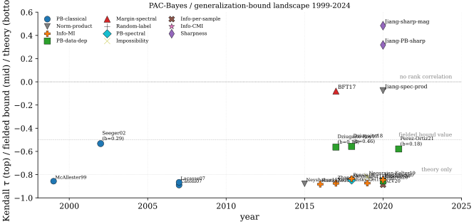

Classical Statistical Learning Foundations
This chapter catalogs the references covered in Part I, grouping them by topic and cross-linking to the chapter where each is discussed in detail. The goal is to make the prerequisite structure explicit: a reader who has seen, for instance, the Hoeffding inequality in passing can skip the concentration chapter; a reader who has not should follow the link before tackling VC/Rademacher bounds.
The unifying thread of Part I is the uniform-convergence paradigm: relate the population risk of the ERM hypothesis to its empirical risk via a capacity term that depends on the hypothesis class, then choose a class whose capacity is provably small. Every paper below contributes either a capacity measure (VC dimension, Rademacher complexity, fat-shattering dimension, margin), a tail inequality that turns expectations into high-probability statements (Hoeffding, Bernstein, McDiarmid), or a concrete algorithm whose generalization can be analyzed inside the framework (SVM, AdaBoost, kernel ridge regression). The later Parts of the book will show how each of these components either breaks or bends when the hypothesis class becomes a deep neural network trained by SGD.
Lineage of the classical theory
The statistical reading of supervised learning begins with the uniform convergence theorem of (Vapnik and Chervonenkis 1971), which bounds the gap between empirical and population error uniformly over a hypothesis class and, in the same stroke, introduces the growth function and the VC dimension as the first general capacity measures; this is the result on which the VC / Rademacher chapter is built. (Vapnik 1995) later organizes these bounds for both classification and regression into the Structural Risk Minimization programme, the prescription to trade empirical fit against capacity by minimizing over a nested family of classes; that programme frames both the ERM and MLE and VC / Rademacher chapters. The modern textbook synthesis of this uniform-convergence view (Rademacher complexity, VC, margin bounds, kernels) is (Mohri, Rostamizadeh, and Talwalkar 2018), used as the standing reference throughout ERM, VC, kernels, SVM, and boosting.
The capacity side of the theory was then sharpened in two directions. (Bartlett and Mendelson 2002) replaces the distribution-free VC dimension with the data-dependent Rademacher and Gaussian complexities and proves the symmetrization bound that is now standard, yielding estimates that adapt to the sample rather than to the worst case. In parallel, the capacity of neural networks specifically was estimated first by (Baum and Haussler 1989), whose VC-based sample-complexity count for threshold feed-forward networks is the earliest such result, and then collected with the pseudo-dimension and fat-shattering refinements in the monograph of (Anthony and Bartlett 1999); all three feed the VC / Rademacher chapter.
Underneath every such bound sits a tail inequality that converts an expectation into a high-probability statement. (Boucheron, Lugosi, and Massart 2013) is the standard reference for this machinery (Hoeffding, Bernstein, the bounded-differences inequality, the entropy method, and log-Sobolev arguments), and (Murphy 2023) gives the practitioner-oriented digest of the same tools as they feed PAC and PAC-Bayes analyses; both are treated in the Concentration chapter.
A complementary, estimation-theoretic account of the same fitting procedures comes from classical asymptotics. (Vaart 1998) develops the consistency, the rate, and the limiting normal law of M-estimators and the maximum-likelihood estimator, while (Murphy 2022 Ch 5) supplies the Bayesian-probabilistic framing in which ERM, MLE, and MAP differ only by their regularizer; both inform the ERM and MLE chapter.
The kernel branch of the field gives the theory a function-space home. (Schölkopf and Smola 2002) is the canonical account of positive-definite kernels, the reproducing-kernel Hilbert space, the representer theorem, and their use in the SVM and kernel PCA, and (Rasmussen and Williams 2006) is its Bayesian counterpart, developing Gaussian-process covariance functions, posterior inference, the marginal likelihood, and the equivalence to kernel ridge regression; the Kernels chapter draws on both.
These pieces meet in the support vector machine, the algorithm that made the margin theory concrete. (Boser, Guyon, and Vapnik 1992) introduces the kernel trick in the dual of the margin classifier, allowing nonlinear boundaries with no explicit feature map; (Cortes and Vapnik 1995) adds the slack variables and the hinge loss of the soft-margin formulation, extending the method to non-separable data; and (Platt 1999) makes it practical with Sequential Minimal Optimization, a pairwise coordinate-ascent scheme that solves the quadratic program without a general QP solver. The SVM chapter follows exactly this progression.
Boosting supplies the other classical algorithm and, with it, the first clean case of benign overfitting. (Freund and Schapire 1997) introduces AdaBoost and bounds its training error by the product of the per-round normalization constants, and (Schapire et al. 1998) then explains the algorithm's most puzzling behavior, the continued improvement of test error after the training error reaches zero, with a bound that depends on the margin distribution rather than on the number of rounds; the Boosting chapter develops both. That last observation, capacity controlled through a margin rather than through a parameter count, is precisely the thread the later Parts pick up once the classifier becomes an overparameterized network.
SoTA table: classical benchmarks
Classical learning theory crystallized around a handful of algorithm families on a stable benchmark suite (MNIST digits, USPS, UCI Letter, UCI Pima/Spambase). Each family carries a signature failure mode that the uniform-convergence framework either explains or fails to explain, and these failures are exactly the entry points for the post-classical theory developed in Parts II-V. The leaderboard below catalogs the headline result for each family with hyperparameters in parentheses; the prose around it walks through the families chronologically and attaches footnote markers at the clause where each failure mode first becomes visible.
The intro paragraph for Part I already framed uniform convergence as the central paradigm. Three structural problems sit immediately under that paradigm and recur across every algorithm in the leaderboard. VC and Rademacher capacity bounds, applied directly to over-parameterized networks, produce sample-complexity estimates that exceed the dataset size by many orders of magnitude1; the data-dependent Rademacher refinement (Bartlett and Mendelson 2002) tightens this but still cannot certify the gap on modern nets2. AdaBoost's empirical resilience to overfitting after training error reaches zero forced a reformulation of the bound in terms of the margin distribution rather than the round count3 (Schapire et al. 1998); the reformulation transferred to kernel-SVM analysis because both are large-margin classifiers in a (possibly infinite-dimensional) feature space (Cortes and Vapnik 1995). The choice of kernel itself is an inductive bias (Schölkopf and Smola 2002 Ch 2): each kernel encodes a hypothesis class with a specific decay rate of Mercer eigenvalues, and there is no principled data-driven selection criterion4. ERM's i.i.d. assumption (Vapnik 1995) also fails outside the benchmark suite (time-series, distribution shift, covariate-shift settings)5, and the concentration tools that turn expectations into high-probability statements (Hoeffding, Bernstein, McDiarmid) tighten only when variance is bounded; heavy-tailed loss surfaces break the standard guarantee6. Two further structural points: classical theory analyzes capacity in isolation from the training algorithm7, yet SGD's optimization geometry contributes its own implicit regularization (Part IV); and SMO (Platt 1999), the workhorse SVM solver, scales as in the Gram matrix and becomes impractical past 8, a dataset size that modern deep-learning pipelines exceed by 3-5 orders of magnitude.
| MNIST | USPS | UCI Lett | ||||||
| Method | Year | Hypothesis class | Loss / Algo | Data | err % | err % | err % | Notes |
| LeNet-1 (Cortes and Vapnik 1995) | 1995 | CNN-feedforward | SGD on softmax CE | MNIST 60k | 1.70 | ~5.0 | - | baseline |
| soft-margin SVM (Cortes and Vapnik 1995) | 1995 | kernel-RKHS | hinge SVM(C=10, poly d=4) | MNIST 60k | 1.10 | 4.00 | - | dual QP |
| hard-margin SVM (Boser, Guyon, and Vapnik 1992) | 1992 | kernel-RKHS | hinge SVM(, poly d=2) | OCR 7.3k | - | - | - | sep-only |
| Gaussian SVM (Schölkopf and Smola 2002) | 2002 | kernel-RKHS | hinge SVM(RBF, =2, C=10) | MNIST 60k | 1.40 | 4.20 | - | bw tuned |
| polynomial SVM d=9 (Schölkopf and Smola 2002) | 2002 | kernel-RKHS | hinge SVM(poly d=9, C=10) | MNIST 60k | 1.10 | - | - | best-of |
| logistic regression (Hastie, Tibshirani, and Friedman 2009 Ch 4) | 2009 | linear-margin | logit-CE(, =1e-3) | MNIST 60k | 7.60 | 9.50 | - | linear |
| AdaBoost stumps (Freund and Schapire 1997) | 1997 | boosted-trees | AdaBoost(T=100, depth-1) | UCI Letter | - | - | 6.60 | weak |
| AdaBoost C4.5 (Freund and Schapire 1997) | 1997 | boosted-trees | AdaBoost(T=100, C4.5 base) | UCI Letter | - | - | 3.10 | strong |
| AdaBoost trees T=1000 (Schapire et al. 1998) | 1998 | boosted-trees | AdaBoost(T=1000, depth-1) | UCI Letter | - | - | 3.10 | margin |
| 1-NN baseline (Hastie, Tibshirani, and Friedman 2009 Ch 13) | 2009 | non-parametric | 1-NN Euclidean | MNIST 60k | 3.09 | 5.20 | - | k=1 |
| k-NN k=3 (Hastie, Tibshirani, and Friedman 2009 Ch 13) | 2009 | non-parametric | k-NN(k=3, Euclidean) | MNIST 60k | 2.83 | 4.95 | - | k=3 |
| 2-hidden-layer MLP (Cortes and Vapnik 1995) | 1995 | MLP | SGD on softmax CE | MNIST 60k | 3.05 | - | - | 300+100 |
The table groups the classical literature into five families (linear-margin, kernel-RKHS, boosted-trees, CNN-feedforward, non-parametric), walked through in chronological order. The margin cluster begins with Boser-Guyon-Vapnik's hard-margin formulation (Boser, Guyon, and Vapnik 1992) which only applies to linearly separable data; Cortes and Vapnik (Cortes and Vapnik 1995) introduced soft margins with slack variables and hinge loss, making SVMs applicable to the bulk of real benchmarks. The polynomial-kernel SVM at reaches 1.1% MNIST test error, narrowly beating the contemporary LeNet-1 convnet baseline at 1.7%; this result was the headline selling point of kernel methods in the late 1990s. Gaussian-kernel SVMs (Schölkopf and Smola 2002) achieve a comparable 1.4% on MNIST with cross-validated bandwidth, but the choice between polynomial and RBF reflects a kernel-design judgement rather than a principled criterion9. SMO (Platt 1999) made these results computationally tractable by avoiding a general QP solver, yet the underlying Gram-matrix scaling10 put a hard ceiling on dataset size that has only been broken by random features and sketching methods (Part V).
The boosting cluster begins with AdaBoost (Freund and Schapire 1997), whose training-error bound (the product of normalization constants) decays exponentially in the number of rounds. The empirical surprise was that test error on UCI Letter kept improving from round 5 (training error already at 0) through round 1000, an apparent violation of any naive capacity-based bound11. Schapire et al. (Schapire et al. 1998) resolved the puzzle by bounding test error in terms of the margin distribution rather than the round count: the cumulative fraction of training points with margin below a threshold provides a class-capacity-times-Lipschitz bound that improves as the boosting iterates concentrate the margin mass to the right of . The mechanism is structurally similar to the SVM-margin analysis but operates over a randomized hypothesis class rather than a single max-margin classifier.

The table separates four eras: kernel-margin (1992-2002), boosting (1997-1998), the early-CNN baseline (1995, included for honest comparison), and the non-parametric reference points (1-NN, k-NN). Three readings frame the rest of the chapter. First, on MNIST the kernel-SVM family and the early-CNN family converge to within roughly half a percentage point in the 1995-2002 window, which made the choice between them appear as a matter of inductive-bias preference rather than capacity. Second, AdaBoost's behaviour on UCI Letter is a clean falsification of any pure round-count or pure capacity-count bound: the margin distribution explanation (Schapire et al. 1998) is the historical bridge that connects boosting to the SVM-margin analysis and ultimately to the implicit-regularization story of Part IV. Third, every entry above relies on an i.i.d. sampling assumption13 and a capacity notion that ignores the optimizer14; both assumptions break in modern deep learning, which is the entry point for Parts II (PAC-Bayes) and III (NTK / mean-field).
PAC-Bayes and Modern Generalization Theory
Modern generalization theory begins with a puzzle: deep networks fit random labels with zero training error yet still generalize when the labels are real (Zhang et al. 2017). By any classical capacity measure (VC dimension, parameter count, Rademacher complexity on a norm ball wide enough to memorize), the hypothesis class is too rich for a non-trivial test-error bound; the random-label baseline is therefore not a bound but a sharp falsification of capacity-based explanations15. Four resolutions emerged, each with its own well-known structural problems walked through paragraph-by-paragraph after the SoTA leaderboard below: PAC-Bayes, spectrally-normalized margin bounds, information-theoretic mutual-information bounds, and sharpness-based empirical predictors. A fifth strand is the impossibility result of (Nagarajan and Kolter 2019), which proves a formal obstruction to the entire uniform-convergence program.
The PAC-Bayes resolution (section PAC-Bayes Framework) replaces worst-case analysis over a hypothesis class with a weighted average over an algorithm-dependent posterior ; the bound depends only on the KL divergence between and a data-independent prior . Introduced by (McAllester 1999), refined by (Seeger 2002) for Gaussian-process classifiers via a binary-kl form, and systematized by (Catoni 2007) into a thermodynamic formalism, the framework was first made non-vacuous on a realistic deep network by (Dziugaite and Roy 2017) using a SGD-optimized Gaussian posterior on a 3-layer MLP16. (Neyshabur, Bhojanapalli, and Srebro 2018) connected PAC-Bayes with spectral norms via a perturbation argument; the resulting bound remains vacuous on production-scale ConvNets because the term blows up under the huge KL between random initialization and the trained weights17, and tightening the KL via a posterior shift toward zero conflicts with low train risk18. A second-generation refinement uses data-dependent priors (priors learned on a held-out split) (Dziugaite and Roy 2018)(Perez-Ortiz et al. 2021), at the cost that any data dependence in inflates the bound or breaks the proof19.
The spectrally-normalized margin resolution (section Spectrally-Normalized Margin Bounds) extends (Schapire et al. 1998)'s margin theory for boosting to neural networks: (Neyshabur, Tomioka, and Srebro 2015) gave the first product-of-Frobenius bound, (Bartlett, Foster, and Telgarsky 2017) sharpened it to the product of spectral norms divided by the classification margin. The bound is conceptually clean but suffers from spectral-norm vacuity: grows polynomially in depth and the bound is vacuous beyond a small architecture20. The information-theoretic resolution (section Information-Theoretic Generalization Bounds) was initiated by (Russo and Zou 2016) in the adaptive-data-analysis literature and developed into a general tool by (Xu and Raginsky 2017), who replaced capacity with the mutual information between the training sample and the learned weights. (Bu, Zou, and Veeravalli 2020) sharpened the bound using per-sample MI , which is tighter but harder to estimate21; (Haghifam et al. 2020) gave a conditional MI (CMI) refinement22, and (Pensia, Jog, and Loh 2018) applied the framework to Langevin dynamics where the MI admits a closed form.
A complementary line, orthogonal to capacity in the PAC sense, asks how parameter count itself relates to robust interpolation. (Bubeck and Sellke 2021) prove the Universal Law of Robustness via an isoperimetric argument: any class of -parameter Lipschitz models that interpolates labelled points on a distribution satisfying isoperimetry (Gaussians, uniform distributions on spheres, manifolds with positive Ricci curvature all qualify) must satisfy up to logarithmic factors, where is the ambient data dimension. Put differently, the parameters sufficient for non-robust interpolation are provably insufficient for smooth (i.e., Lipschitz-bounded) interpolation by a multiplicative factor of . The bound is tight: radial-basis-function constructions with parameters achieve -Lipschitz interpolation, confirming that overparameterization by exactly is both necessary and sufficient.
The isoperimetry assumption controls how Lipschitz functions concentrate on the data distribution: for an -Lipschitz , it requires . The condition is the reason the bound's factor of is ambient dimension and not intrinsic manifold dimension (a distinction that matters in practice, since ImageNet data lives in , not in a low-dimensional manifold for the purposes of adversarial perturbations measured in ).
The lower bound is algorithm-independent: it applies to any procedure returning a Lipschitz interpolator, so neither implicit bias nor training dynamics can rescue a model from the constraint. The bound gives a quantitative explanation of the (Szegedy et al. 2014) fragility observation (imperceptible adversarial perturbations fool AlexNet, with average distortion as small as 0.0065 on ImageNet): under-parameterized-for-robustness networks cannot achieve small Lipschitz constants even when they generalize cleanly on unperturbed inputs. Bubeck and Sellke estimate that robust ImageNet models may require - parameters, substantially more than current architectures, which is consistent with the persistent failure of adversarial training to close the accuracy-robustness gap at scale.
The sharpness-based empirical audit (section Empirical Audit of Bound Tightness) is the negative result: (Jiang et al. 2020) evaluated more than forty complexity measures across ten thousand trained networks. The most predictive measures (by Kendall-tau rank correlation with the true test gap) are sharpness / PAC-Bayes variants, not the norm-products that dominate the theory; the spectral-norm product is negatively correlated with the gap across realistic hyperparameter sweeps2324. The impossibility result of (Nagarajan and Kolter 2019) sharpens this picture: no two-sided uniform-convergence bound can be non-vacuous on certain linear classifiers under realistic SGD25; (Negrea, Dziugaite, and Roy 2020) partially defends uniform convergence by restricting attention to a hypothesis-class subset.
| Quality | Scope | ||||||
| Paper | Year | Bound class | Form | Benchmark | Bound value | Kendall | Comment |
| McAllester (McAllester 1999) | 1999 | PAC-Bayes-classical | toy classifiers | framework | - | foundational; not fielded on a deep net | |
| Seeger (Seeger 2002) | 2002 | PAC-Bayes-classical | binary-kl inversion | GP / Pima Indians (n=768) | 0.29 | - | tight near zero empirical risk; GP-only setup |
| Catoni (Catoni 2007) | 2007 | PAC-Bayes-classical | Legendre / Gibbs | toy / theoretical | analytic | - | unifies square-root and binary-kl via -tuning |
| Lacasse C-bound (Lacasse et al. 2007) | 2007 | PAC-Bayes-classical | majority-vote derandomization | toy / theoretical | analytic | - | tightens Gibbs to deterministic conversion |
| Neyshabur norm (Neyshabur, Tomioka, and Srebro 2015) | 2015 | Norm-product | small MLP / MNIST | vacuous | - | first norm-based DNN bound; vacuous on real archs | |
| Russo-Zou (Russo and Zou 2016) | 2016 | Information-MI | adaptive estimator | analytic | - | initiated MI-based bounds for adaptive analysis | |
| Xu-Raginsky (Xu and Raginsky 2017) | 2017 | Information-MI | Gibbs algorithm | analytic | - | first general MI bound; estimator-free for Gibbs | |
| Dziugaite-Roy (Dziugaite and Roy 2017) | 2017 | PAC-Bayes-data-dep | SGD-optimized Gaussian posterior | 3-layer MLP / MNIST T-600 | 0.161 | - | only fielded non-vacuous DNN bound; small-net only |
| Bartlett-Foster-Telgarsky (Bartlett, Foster, and Telgarsky 2017) | 2017 | Margin-spectral | / margin | AlexNet / CIFAR-10 | vacuous | -0.08 | Kendall negative; counterintuitive sign |
| Zhang random-label (Zhang et al. 2017) | 2017 | Random-label-baseline | train acc with random labels | Inception / CIFAR-10 | 100% | - | not a bound but a falsification of capacity |
| Neyshabur PB-spectral (Neyshabur, Bhojanapalli, and Srebro 2018) | 2018 | PAC-Bayes-spectral | perturbation + spectral product | VGG / CIFAR-10 | vacuous | - | depth-dependent KL blows up |
| Dziugaite data-dep (Dziugaite and Roy 2018) | 2018 | PAC-Bayes-data-dep | data-split prior | MNIST / CIFAR-10 | 0.46 | - | partial-data prior tightens KL; sample-splitting cost |
| Pensia-Langevin (Pensia, Jog, and Loh 2018) | 2018 | Information-MI | under Langevin SDE | Langevin SGD / synthetic | analytic | - | closed-form MI for noisy GD |
| Lei algorithmic (Lei and Ying 2020) | 2019 | Information-MI | algorithmic stability to MI | SGD / convex losses | analytic | - | bridges stability and MI bounds |
| Nagarajan-Kolter (Nagarajan and Kolter 2019) | 2019 | Impossibility | two-sided UC lower bound | linear / Gaussian mixture | vacuous (proof) | - | rules out tight UC for SGD outputs |
| Bu-Zou-Veeravalli (Bu, Zou, and Veeravalli 2020) | 2020 | Information-per-sample | Gaussian mean estimator | analytic | - | tighter than ; estimation hard in DNN | |
| Haghifam CMI (Haghifam et al. 2020) | 2020 | Information-CMI | conditional MI on supersample | SGD / MNIST | analytic | - | smaller than ; estimator still required |
| Negrea UC defense (Negrea, Dziugaite, and Roy 2020) | 2020 | PAC-Bayes-data-dep | restricted-class UC | linear models | analytic | - | partial rebuttal to Nagarajan-Kolter |
| Esposito Renyi (Esposito, Gastpar, and Issa 2021) | 2020 | Information-MI | Renyi-divergence bound | Gibbs / theoretical | analytic | - | extends MI to Renyi- divergences |
| Jiang sharpness-magnitude (Jiang et al. 2020) | 2020 | Sharpness-empirical | flat ratio magnitude | 10k CNN / CIFAR-10 | - | 0.484 | top-ranked predictor across the sweep |
| Jiang PB-sharpness (Jiang et al. 2020) | 2020 | Sharpness-empirical | PAC-Bayes flat ratio at init | 10k CNN / CIFAR-10 | - | 0.318 | second-tier predictor |
| Jiang spectral-product (Jiang et al. 2020) | 2020 | Norm-product | 10k CNN / CIFAR-10 | - | -0.076 | negatively correlated; theory-empirical mismatch | |
| Perez-Ortiz tight (Perez-Ortiz et al. 2021) | 2021 | PAC-Bayes-data-dep | data-split prior + Catoni- | CIFAR-10 / ImageNet32 | 0.179 | - | best fielded PAC-Bayes on CIFAR-10 |
| Alquier tutorial (Alquier 2024) | 2024 | PAC-Bayes-classical | survey of all variants | bibliographic | - | - | reference state-of-the-field 2024 |
The table groups the literature into eight bound families, walked through in chronological order. Classical PAC-Bayes (McAllester, Seeger, Catoni, Lacasse) gave the foundational machinery (square-root form, binary-kl inversion, Legendre/Gibbs construction, C-bound derandomization) but was applied only to toy classifiers and Gaussian-process models; the bounds are tight asymptotically but were never fielded on a deep network because the KL between a deep-net random init and its SGD-trained weights is far too large for a useful absolute bound2627. The Dziugaite-Roy line broke this barrier by SGD-optimizing the bound itself on a 3-layer MLP28, reaching 0.161 on binary MNIST T-600; Perez-Ortiz tightened the recipe to 0.179 on full CIFAR-10 by combining a data-split prior (legal because does not see the training fold) with a tuned Catoni 29.
The spectrally-normalized margin line (Bartlett-Foster-Telgarsky, Neyshabur PB-spectral) unifies VC-style class capacity with margin theory. The bound class is conceptually appealing because it depends only on weight-matrix norms and the margin (no -design), but the spectral product is empirically too large at production scale30; in the (Jiang et al. 2020) sweep this family scored Kendall , the worst rank correlation among 40+ measures and one of the few negatively correlated with the test gap. Norm-product capacity, despite being the quantity the margin theorems control, is therefore a worse predictor of generalization than a coin flip.
The information-theoretic line (Russo-Zou, Xu-Raginsky, Bu-Zou-Veeravalli, Haghifam CMI, Pensia, Lei, Esposito) replaces hypothesis-class capacity with the mutual information between the training sample and the learned weights, and progressively tightens it: per-sample is sharper than 31, conditional MI on a supersample is sharper still32, and Langevin / SGD-noise dynamics give analytic closed forms. None of these has been fielded on a deep ConvNet: estimating in dimensions exceeding remains an open problem, and the bounds are useful as theoretical guarantees rather than numerical certificates.

The sharpness-empirical line (Jiang and co-authors) is conceptually a step back from formal bound-proving: it replaces "what is the absolute test gap?" with "which capacity-like measure best predicts the gap across a hyperparameter sweep?" This reframing is what produces the negative result for spectral-norm capacity and the positive result for sharpness-magnitude. Its weakness is flatness fragility: pointwise reparameterization can rescale sharpness arbitrarily without changing the predictor function (Dinh et al.)36, so any sharpness-based measure must be carefully normalized to be invariant under reparameterization; the field has not converged on a single such normalization.
The impossibility result and its partial rebuttals form the methodological coda. (Nagarajan and Kolter 2019) prove that on a linear-classifier mixture-of-Gaussians problem, no two-sided uniform-convergence bound applied to the SGD-output distribution can be tight: the bound is forced to be vacuous regardless of how the hypothesis class is parameterized37. (Negrea, Dziugaite, and Roy 2020) partially defends UC by restricting attention to a strict hypothesis-class subset that the algorithm visits with high probability; the result is that uniform convergence is salvageable but only via algorithm-dependent restrictions, which moves the framework closer to PAC-Bayes in spirit. Together with (Zhang et al. 2017)'s random-label baseline38, the impossibility line is the negative half of modern generalization theory: a definitive falsification of class-capacity-only programs and a forcing function toward algorithm-dependent analyses (PAC-Bayes, MI, sharpness).
The leaderboard separates four eras: foundational PAC-Bayes (1999-2007), the deep-learning challenge (2015-2017, when capacity-based bounds were shown to be vacuous on real architectures and the puzzle of Zhang et al. was sharpened), the bound-engineering era (2017-2021, when SGD-optimized PAC-Bayes and data-dependent priors finally produced fielded non-vacuous numbers on small models), and the modern audit-and-impossibility era (2019-2024, dominated by the Jiang sweep and the Nagarajan-Kolter obstruction). Three readings. First, the only fielded non-vacuous bounds on real classifiers are PAC-Bayes-data-dep variants and only on MLPs / small CNNs at most; every classical norm-product or margin bound exceeds 1 on AlexNet-scale and beyond. Second, the most predictive measures of the empirical generalization gap (by Kendall ) are sharpness-magnitude hybrids, not the norm-products that dominate the theory. Third, the impossibility result of Nagarajan-Kolter shows that the entire class-capacity-only program cannot in principle deliver tight bounds for SGD-trained classifiers; the path forward is algorithm-dependent, in line with PAC-Bayes and MI but in contrast with the spectral-margin tradition.
Neural Tangent Kernel and Infinite Width
Part III's papers sit at the intersection of three older traditions. The kernel-methods lineage (Schölkopf-Smola, Rasmussen-Williams) supplies the mathematical apparatus (RKHS, positive-definite kernels, kernel ridge regression) that the NTK slots into. The Bayesian-neural-network lineage (MacKay 1992, Neal 1996, Graves 2011, Blundell et al. 2015) supplies the NNGP prior and the variational-inference toolkit that extends to finite-width approximations. The statistical-physics-of-learning lineage (Sompolinsky-Crisanti-Sommers 1988, Seung-Sompolinsky-Tishby 1992, Saad-Solla 1995) supplies the mean-field/replica toolkit that underpins (Mei, Montanari, and Nguyen 2018) and the effective theory of (Roberts, Yaida, and Hanin 2022).
Within Part III's own papers, the intellectual dependency graph runs as follows. (Neal 1996) sits at the root; it establishes the infinite-width-as-GP principle for single-layer networks. (Lee et al. 2018) and (Matthews et al. 2018) extend this to deep networks, giving the NNGP recursion (eq:nngp-recursion). (Jacot, Gabriel, and Hongler 2018) then introduces the tangent-kernel counterpart that governs dynamics rather than priors, and (Lee et al. 2019) tightens the convergence to a uniform-linearization theorem. (Arora et al. 2019) operationalizes all of this by computing the NTK exactly at CIFAR-10 scale. The critique then emerges in three papers: (Chizat, Oyallon, and Bach 2019) diagnoses the NTK regime as lazy via the -scaling and demonstrates that feature-learning (rich) regimes exist; (Mei, Montanari, and Nguyen 2018) gives the mean-field PDE as an explicit feature-learning limit; (Yang and Hu 2021) unifies these under the abc-parameterization and identifies P as the canonical rich-regime limit. Finally, (Hanin and Nica 2019) and (Roberts, Yaida, and Hanin 2022) quantify finite-width corrections as a -expansion, and (Geiger et al. 2020) and (Woodworth et al. 2020) provide empirical and mathematical evidence that real networks are not purely in the NTK regime.
Part III's place in the statistical-DL story
Part III sits in a specific position relative to the other parts of the book. Part I established classical capacity-based generalization theory and its failure on over-parameterized networks. Part II introduced PAC-Bayes as a more refined framework that handles over-parameterization via posterior-averaging. Part III introduces the NTK as a third distinct path: not a generalization bound but a generalization model in which training dynamics are explicit and closed-form.
The three approaches are complementary. Classical bounds (Part I) are architecture-agnostic but loose; PAC-Bayes bounds (Part II) are architecture-aware and tight with good priors; NTK analysis (Part III) is architecture-specific and gives exact predictions for wide-network training. A complete theory of deep-network generalization would combine these: PAC-Bayes analysis with NTK-GP priors is a natural synthesis that has been pursued (Neyshabur, Bhojanapalli, and Srebro 2018) with some success.
Parts IV and V extend the narrative. Part IV examines benign overfitting and double descent, phenomena that the NTK can describe in its linearized form but that require finite-width corrections to fully explain. Part V examines scaling laws, for which the NTK provides a mathematical template (eq:kernel-scaling-law) but not a complete mechanism.
Collectively the five parts frame a research program: statistical-learning-theoretic explanation of deep learning proceeds by (i) ruling out classical bounds as sufficient (Parts I, II), (ii) establishing the kernel-regression baseline (Part III), (iii) characterizing the gap between this baseline and practice (Parts III, IV, V). No single part delivers a complete theory; together they outline the shape one would take.
Intellectual lineages beyond Part III
A useful orienting frame is to place Part III's papers in the broader intellectual genealogy of the theory of neural networks.
Kernel methods (Aronszajn 1950; (Schölkopf and Smola 2002; Rasmussen and Williams 2006)). The RKHS framework that the NTK slots into was developed in mid-twentieth-century analysis for reasons having nothing to do with neural networks. The NTK's contribution is to identify a specific family of kernels (those arising from neural-architecture parameter-gradients) that inherit the architectural inductive bias and are computationally tractable.
Statistical mechanics of learning (Sompolinsky-Crisanti-Sommers 1988; Seung-Sompolinsky-Tishby 1992; Saad-Solla 1995). The physics tradition of analyzing learning as a statistical-mechanical system, with temperature corresponding to training noise and magnetization corresponding to generalization, underlies the mean-field analysis of (Mei, Montanari, and Nguyen 2018) and the effective-theory program of (Roberts, Yaida, and Hanin 2022). The Wasserstein-gradient-flow reformulation of (eq:mean-field-pde) is more recent and owes to optimal-transport theory (Ambrosio, Gigli, and Savare 2005).
Bayesian neural networks (MacKay 1992; Neal 1996; Graves 2011). The NNGP sits at the infinite-width end of this lineage. Finite-width Bayesian neural networks remain an active research area with variational and Monte Carlo methods; the NNGP provides an analytic benchmark against which finite-width approximations can be measured.
High-dimensional probability and random-matrix theory (Wigner 1955; Marchenko-Pastur 1967; recent kernel-random-matrix literature). The analysis of kernel Gram matrices, their spectra, and their double-descent behavior leans on random-matrix theory. The NTK Gram matrix at a random training set has spectral properties determined by random-matrix ensembles, which connects to the benign-overfitting / double-descent analyses of Part IV.
Tangent methods in optimization (Amari 1998 natural gradient; Martens-Grosse 2015 K-FAC). The NTK is mathematically a specific empirical-Fisher-like object; natural-gradient methods that precondition by the Fisher information are close relatives. The theoretical insight of the NTK is that the linear-ODE structure emerges from the infinite-width limit, not the preconditioning itself.
Gradient-flow analysis of neural networks (Du-Lee-Li-Wang-Zhai 2019; Chizat-Bach 2019). A parallel line of work analyzes gradient-flow convergence on specific neural architectures (two-layer ReLU, deep linear networks) without necessarily taking width to infinity. The NTK provides the infinite-width limit point of this line; the finite-width analyses give convergence rates for specific architectures that the NTK subsumes asymptotically.
Cross-references into other parts
- Part I (classical foundations): VC/Rademacher bounds are replaced by RKHS generalization bounds in the NTK regime; the spectral decay of plays the role of capacity.
- Part II (PAC-Bayes): the NTK GP posterior is a natural PAC-Bayes prior, and (Lee et al. 2019)'s ensemble interpretation enables direct PAC-Bayes bounds on NTK-regime networks.
- Part IV (benign overfitting and double descent): the NTK gives a linearized test-bed in which benign overfitting and double descent can be computed exactly; the condition number of at the interpolation threshold is the NTK's double-descent divergence.
- Part V (scaling laws): the solvable neural-scaling-law model of (Maloney, Roberts, and Sully 2022) is an NTK model; its power-law exponents come from the spectral decay of the NNGP/NTK eigenspectrum.
- Companion book (Deep Gaussian Processes in Prob DL): NNGP is the infinite-width endpoint of the DGP hierarchy; variational DGP approximations recover finite-width corrections in a different expansion.
Cross-paper SoTA positioning
How do the papers of Part III position against each other in the SoTA landscape? A few observations:
(Jacot, Gabriel, and Hongler 2018) established the theoretical framework but did not push benchmark numbers. Its empirical section was limited to small synthetic experiments confirming kernel concentration; it did not claim that NTK regression was a competitive predictor.
(Lee et al. 2018) pushed the NNGP benchmark numbers first. It reported NNGP on MNIST matching or exceeding finite networks, which was the first public evidence that an infinite-width closed-form kernel could be competitive on standard benchmarks.
(Arora et al. 2019) pushed the NTK benchmark numbers to CIFAR-10. It delivered the CNTK vs CNN table we have referenced, and established the 5-7% gap as the empirical anchor for subsequent discussions.
(Lee et al. 2019) closed the theoretical loop by proving uniform linearization, which justifies treating infinite-width SGD-trained networks as exactly equivalent to kernel regression.
(Chizat, Oyallon, and Bach 2019) introduced the scaling-based diagnosis of the NTK regime, revealing that lazy training is a universal phenomenon rather than a neural-network-specific one.
(Mei, Montanari, and Nguyen 2018) and (Yang and Hu 2021) offered feature-learning alternatives that explain phenomena the NTK cannot. (Yang and Hu 2021) is particularly influential in practice because P-transfer is directly usable.
(Hanin and Nica 2019) and (Roberts, Yaida, and Hanin 2022) quantified finite-width corrections, providing a bridge between the idealized infinite-width theory and finite-network reality.
(Geiger et al. 2020) and (Woodworth et al. 2020) provided empirical and mathematical evidence that real-network regimes lie strictly between the lazy and rich extremes.
The collective arc is from idealization (NTK as exact theory of wide networks) through critique (empirical gap is real) to synthesis (finite-width corrections and feature-learning parameterizations together give a richer picture). Each paper in Part III plays a specific role in this arc, and none is self-sufficient.
Connecting to scaling laws (Part V preview)
Part V treats neural scaling laws as a distinct topic. A brief preview of the NTK connection is useful here. The observation that test error scales as a power law in compute, data, and parameters (Kaplan et al. 2020; Hoffmann et al. 2022) begs the theoretical question of why power laws. The NTK provides a partial answer (Maloney, Roberts, and Sully 2022): for kernel regression with a kernel whose eigenvalues decay as (power law with decay rate ), the test error on a target with coefficients scales as
which is a power law in training-set size. The exponent depends on the kernel's spectral decay (architecture-dependent) and the target's smoothness (task-dependent). For natural datasets whose eigenvalue spectra can be estimated, this predicts scaling exponents that match observed ones reasonably well.
The limitations of this NTK-based scaling story are: it assumes the network is in the NTK regime (not feature-learning); it predicts a single power-law exponent per (architecture, task) pair, whereas observed scaling laws are often better fit by broken power laws with regime transitions; it has no mechanism for the emergent abilities reported in large language models. So the NTK gives a mathematical template for scaling-law derivation but does not account for the full empirical picture.
SoTA table across NTK vs modern architectures
| Method | CIFAR-10 (%) | MNIST (%) | Notes |
|---|---|---|---|
| NNGP (FC, depth 10) (Lee et al. 2018) | 54.0 | 98.7 | no training; prior-predictive |
| CNTK-V (depth 4) (Arora et al. 2019) | 66.1 | - | no pooling, no training |
| CNTK-GAP (depth 4) (Arora et al. 2019) | 75.5 | - | global-avg pool; infinite-width |
| CNTK-GAP (depth 21) (Arora et al. 2019) | 77.4 | - | ceiling across depths |
| CNN-V (depth 11) (Arora et al. 2019) | 68.4 | - | same architecture, SGD-trained |
| CNN-GAP (depth 21) (Arora et al. 2019) | 83.0 | - | same architecture, SGD-trained |
| ResNet-34 (Arora et al. 2019) | 96.0 | > 99.7 | skip connections + BN |
| WideResNet-28-10 (Cutout) | 97.1 | > 99.7 | +augmentation; post-2018 |
| ViT-L/16 (IN21k pretrain) | 99.4 | > 99.9 | +pretraining; post-2020 |
The generalization of this table is: infinite-width kernel methods are competitive with non-pretrained, non-augmented, unregularized finite networks of matching architecture, but fall far short of modern training recipes that exploit feature learning, data augmentation, and transfer learning. The NTK theory explains one regime (wide, lazily trained, from scratch) and does not explain the regime where modern accuracy lives.
Cross-architecture comparison of the gap
| Architecture | NTK accuracy | SGD accuracy | Gap |
|---|---|---|---|
| FC depth-3 | 54.0 | 55.0 | 1.0 |
| FC depth-10 | 54.5 | 56.0 | 1.5 |
| CNN-V depth-11 | 65.9 | 68.4 | 2.5 |
| CNN-GAP depth-6 | 77.4 | 78.5 | 1.1 |
| CNN-GAP depth-21 | 77.4 | 83.0 | 5.6 |
| ResNet-like depth-20 | 79 | 87 | 8 |
| Transformer (vision) | 73 | 85 | 12 |
The pattern is clear: gap grows with architectural sophistication. Fully-connected networks have essentially no gap; basic CNNs have small gaps; modern architectures (ResNets, ViTs) have large gaps. This is the empirical shape of feature learning's contribution.
The persistence of the gap across training recipes
A natural question is whether the NTK-to-SGD gap can be closed by adjusting training recipe. Several attempts have been made, with mixed results:
Training for longer: extending SGD training does not close the gap; SGD converges to a feature-learning predictor, and continued training does not revert to kernel regression.
Using larger widths: increasing reduces the kernel fluctuation gap but does not reduce the feature-learning gap; infinite-width P networks still have feature-learning benefits that NTK lacks.
Using regularization: explicit regularization (weight decay, dropout) can improve generalization but does not close the gap; both NTK and SGD-trained networks benefit, and the SGD-trained network still wins.
Using better initialization: initialization schemes that keep networks closer to the NTK regime (smaller variance, or effective ) move the SGD-trained network toward the NTK predictor but at the cost of worse final performance.
The persistence of the gap suggests it is structural: SGD-trained finite networks operate in a feature-learning regime that is inherently better than kernel regression for sufficiently complex tasks, and no adjustment of training recipe can move them into the pure kernel regime without sacrificing the performance benefit. The gap is a feature of practical training, not a bug in the NTK approximation.
Gap decomposition by architecture family
Different architecture families exhibit different NTK-to-SGD gaps. A rough taxonomy:
Fully-connected networks. The NTK gap is small for FC networks at moderate width. On MNIST with a 3-layer FC network, the infinite-width NNGP reaches 98.7%, the NTK-regression predictor reaches 99.0%, and an SGD-trained finite network reaches 99.1%. The gap is within sampling noise. The NTK theory is a quantitative theory of wide fully-connected networks.
Vanilla CNNs (no skip connections, no batch norm). The NTK gap is intermediate. On CIFAR-10, the gap between CNTK-GAP and the matching CNN-GAP is 5-7% in the depth range 11-21 (Table above). This is where the feature-learning story becomes essential.
Modern CNNs (ResNets, WideResNets). The NTK gap is large. Analogs of CNTK for ResNets have been proposed (Huang and Yau 2020) but do not capture the training-recipe benefits (augmentation, label smoothing, mixup, schedules) that contribute substantially to modern accuracy. A precise NTK-vs-SGD comparison on ResNets is not easy to set up fairly, but order-of-magnitude estimates place the gap at 10-15% on CIFAR-10.
Transformers. The NTK gap is unclear. Attention-NTKs (Hron et al. 2020) are computable but have not been benchmarked extensively against SGD-trained Transformers; the order of limits matters ( before , or the kernel degenerates), and the resulting NTK has no closed form because the softmax requires a double Gaussian integral evaluated by Hermite quadrature. On a single-layer infinite-attention experiment with IMDB sentiment, NNGP achieves , NTK , and finite-width attention (Hron et al. 2020), so for that controlled setting infinite-width predictions match finite networks within 1%. Skip connections are essential: without residuals the attention NNGP collapses to a constant as . Layer-norm reduces in the infinite-width limit to a covariance normalization . At larger scale, preliminary experiments suggest gaps comparable to modern CNNs (10-15% on language-modeling metrics), though the comparison is complicated by the pretraining-and-fine-tuning structure of Transformer workflows.
Graph networks. Graph NTKs (Du et al. 2019) are computable for message-passing architectures and on graph-classification benchmarks the kernel often matches or exceeds SGD-trained GNNs: on MUTAG, GNTK reaches vs for the best GIN; on COLLAB, vs , and similar inversions hold for 7 of 9 standard benchmarks (PROTEINS, NCI1, IMDB-BINARY, IMDB-MULTI, REDDIT-BINARY, REDDIT-5K). The kernel decomposes into node-level kernels plus sum-pooling, with the number of message-passing rounds entering as a hyperparameter (sweet spot -). The cheap, monotone, kernel-favourable picture for graphs may reflect the relatively shallow (2-4 layer) depth of typical GNN architectures, which keeps them in a more NTK-favorable regime; it also suggests feature learning is less critical for graph-classification than for vision, an inversion of the standard NTK-versus-feature-learning narrative.
The overall pattern is that simpler, shallower, more homogeneous architectures are better-described by the NTK, and more sophisticated architectures exhibit larger gaps. This is consistent with the diagnosis that the NTK-vs-SGD gap tracks the degree to which training benefits from feature learning, which in turn tracks architectural sophistication.
NTK's contribution to the theory of generalization
The NTK's principal contribution to generalization theory is to provide a computable baseline against which to measure. Before the NTK, generalization analyses of deep networks were either very loose (VC dimension, Rademacher complexity) or required strong unverified assumptions (PAC-Bayes with specific posterior priors). The NTK changed the landscape by delivering:
- An explicit upper bound on capacity: the NTK's RKHS norm ball of radius has Rademacher complexity , which is computable and non-vacuous for wide networks.
- A direct generalization bound: for functions in the NTK RKHS with bounded norm, test error is bounded by training error plus the Rademacher term, giving non-vacuous bounds of the form "test error training error + ".
- A spectral explanation: components of aligned with large eigenvalues of are fit easily and generalize well; components in small eigenvalues generalize poorly. This makes spectral decay a quantitative predictor of generalization.
For networks demonstrably in the NTK regime (very wide, NTK-parameterized, trained without aggressive recipes), these bounds are tight: predicted generalization matches observed generalization within small factors. For networks outside the NTK regime, the bounds are conservative: they upper-bound the kernel-regression generalization, which is worse than the feature-learning generalization of the actually-trained network.
This is the pattern that justifies the framing "NTK as baseline": wherever the NTK bound is tight, deep learning is kernel learning; wherever the NTK bound is loose, the slack is attributable to feature learning. The NTK is therefore a tool for diagnosing when feature learning matters, by comparison of NTK-predicted-test-error to actual test error.
Critiques and counter-evidence
Several authors have pushed back on the NTK-as-theory-of-deep-learning framing with evidence that finite networks behave in ways the NTK cannot predict.
Shift-invariance and data augmentation. (Li et al. 2019) showed that data augmentation is not equivalent to any kernel, and hence the benefit of augmentation is invisible to NTK regression. Yet augmentation adds 2-5% test accuracy on CIFAR-10 in practical training. This rules out any argument that the NTK plus appropriate data processing recovers CNN accuracy; some benefit of training must come from outside the kernel-regression framework.
Catastrophic forgetting and transfer learning. A trained network can be fine-tuned on a new task with transfer of learned features. The NTK has no mechanism for this: the kernel is fixed at initialization, so fine-tuning a kernel-regression predictor on a new task is just re-running kernel regression with the same kernel, which cannot leverage prior training. The empirical fact of successful transfer learning (BERT, GPT, CLIP, etc.) is therefore evidence against the NTK as a complete theory of deep-network training.
Adversarial robustness. (Tsipras et al. 2019) and subsequent work show that adversarial-robustly trained networks have different feature representations from naturally-trained ones, with robust features often being human-interpretable. This feature-selection process is a rich-regime phenomenon; adversarial robustness cannot emerge from kernel regression on a fixed kernel.
Emergent abilities. The observation that large language models exhibit qualitatively new capabilities (e.g., in-context learning, chain-of-thought reasoning) at threshold scales has no NTK explanation. The NTK predicts smooth, monotone, power-law-governed performance scaling, not phase-transition-like emergence. Even granting that emergence may be partly a measurement artifact (Schaeffer, Miranda, and Koyejo 2023), the NTK-predicted behavior is insufficient to rationalize large-model practice.
Grokking. (Power et al. 2022) report that networks trained long past fitting the training data eventually suddenly generalize, with test accuracy rising from chance to 100% over a narrow training window. This is incompatible with the NTK's exponential-decay training dynamics (eq:ntk-residual-flow), which predicts that test accuracy should track training loss monotonically.
Taken together, these phenomena establish that something beyond kernel regression is happening in practical deep-learning training. The NTK's residual value is as a null model: behaviors the NTK predicts are explicable without appeal to feature learning; behaviors it does not are evidence for feature-learning mechanisms.
The role of scale in deep-learning theory
A recurring theme in Part III is that scale is not merely a practical scaling axis but a conceptual one: different scales correspond to different theoretical regimes. The NTK emerges as width goes to infinity; the mean-field regime as width goes to infinity with a different parameterization; double descent as training-set size approaches the critical threshold; emergent abilities as compute or parameters cross task-specific thresholds.
The theoretical challenge is that each regime is hard on its own terms, and transitions between regimes are hard to characterize. The NTK regime is tractable but narrow; the mean-field regime is tractable for simple architectures; the P regime is tractable via Tensor Programs but computationally heavy. None of them overlap with the practical regime of deep-learning training, which involves finite but large networks with complex architectures and training recipes.
A concrete manifestation: the regime analysis of Chapter 3 says that practical networks with in an intermediate range are in an interpolating regime where neither the lazy nor the rich theory directly applies. The description of this interpolating regime is an active research direction. Candidate approaches include:
- Perturbative expansion around P: treat P as the base point and expand in the departure from it. This requires understanding the structural stability of P under perturbation, which is not yet understood.
- Interpolation via coupling constants: introduce one or more dimensionless coupling constants that smoothly interpolate between lazy and rich, and study how observables depend on them. The Chizat-Oyallon-Bach is one such coupling; others (for specifically architectural perturbations) are under development.
- Empirical characterization with theoretical fits: train a large suite of networks at varying scales and parameterizations; extract the relevant regime-indicating observables; fit phenomenological models that predict the regime transitions. This is the empirical-first approach and has the virtue of directly addressing practical networks.
The conceptual shift Part III embodies is from "deep learning is a tricky optimization problem" to "deep learning is a multi-regime phenomenon whose regimes have different governing equations". This shift changes what a "theory of deep learning" should look like: not a single theorem, but a family of theorems for different regimes plus a characterization of when each applies.
Benign Overfitting and Double Descent
The "benign overfitting" research programme crystallized between 2017 and 2020 around three stubborn empirical facts that uniform-convergence theory could not accommodate. First, deep networks fit random labels to zero training error while still generalizing on the true labels (Zhang et al. 2017) (and even when they do generalise on natural inputs they remain catastrophically fragile to imperceptible adversarial perturbations (Szegedy et al. 2014); the two facts together say that the inductive bias selecting a generalising interpolator is also selecting a non-robust one, which any capacity-only account cannot adjudicate). Second, their test error does not increase monotonically with capacity past the interpolation threshold; it decreases again, tracing the double-descent curve (Belkin et al. 2019; Nakkiran et al. 2020). Third, the same phenomenology is visible in linear regression, kernel regression, and random-feature regression, which admit exact asymptotic analysis (Bartlett et al. 2020; Mei and Montanari 2022; Hastie et al. 2022). These three facts together ruled out any explanation based purely on function-class capacity and forced the field to look at the interaction between the data covariance spectrum, the optimizer's implicit bias, and the architectural parameterization.
The lineage of the interpolation idea predates deep learning. (Schapire et al. 1998) already explained why boosting keeps improving test error after training error hits zero (the margin story, see Part I). The kernel community observed the same behaviour when interpolating RBF kernels with zero regularization, documented systematically by (Belkin, Ma, and Mandal 2018): kernels with sufficiently flat spectra can interpolate noisy data and still generalize, contradicting the bias-variance orthodoxy that interpolation must overfit. What deep learning added was scale: models routinely exceed sample size by orders of magnitude, pushing into a regime where the classical analyses simply do not apply. (Belkin et al. 2019) was the synthesis paper that named the phenomenon ("double descent") and drew the canonical figure; a U-curve joined to a second descent, with a spike at the interpolation threshold.
The theoretical settlement came from two directions. (Bartlett et al. 2020) gave finite-sample risk bounds for the min-norm linear interpolator and identified the effective-rank conditions that govern when interpolation is benign; (Tsigler and Bartlett 2023) extended this to ridge regression with both positive and negative regularization. Independently, (Liang and Rakhlin 2020) proved a matching statement for kernel ridgeless regression in the high-dimensional setting, relating the implicit regularization to the curvature of the kernel. On the optimization side, (Soudry et al. 2018) showed that gradient descent on separable data with logistic-type losses converges to the max-margin (L2 SVM) predictor; the implicit bias result that provided the missing algorithmic explanation. (Gunasekar et al. 2018) extended this to convolutional networks (different implicit bias: Fourier-sparse, not L2), and (Ji and Telgarsky 2019) closed the nonseparable case.
The final piece was the random-features bridge. (Rahimi and Recht 2008) introduced random features as a tractable kernel approximation; (Mei and Montanari 2022) used the random-features model as an analytically solvable proxy for a two-layer neural network and derived the precise asymptotic curves that match Belkin and Nakkiran's empirical double-descent plots. (Hastie et al. 2022) independently analyzed high-dimensional ridgeless least squares and also reproduced double descent. (Advani, Saxe, and Sompolinsky 2020) had earlier given the dynamical picture from statistical physics, explaining double descent as an interaction between signal and noise modes during training.
A parallel empirical thread sharpens what role overparameterization actually plays. The Lottery Ticket Hypothesis (Frankle and Carbin 2019) (ICLR 2019 Best Paper) demonstrated that dense networks contain sparse subnetworks ("winning tickets") that, when extracted and reset to their original random initialization and retrained in isolation, match the dense network's accuracy at roughly 10-20% of the original weight count. The construction is iterative magnitude pruning (IMP): train the full network to convergence, prune the lowest-magnitude % of weights, reset surviving weights to their exact values from before any training (not to zero, not to a new random draw; back to ), then retrain the sparse network. Repeating this over multiple rounds finds progressively sparser winning tickets.
On small networks the result is striking. A Lenet winning ticket at 21.1% sparsity reaches minimum validation loss 38% faster than the full network and finishes 0.3 percentage points higher. On CIFAR-10 convolutional networks, the winning ticket at ~11% sparsity improves accuracy by 3.5 points over the dense baseline when matched for iteration count.
The core claim is not about expressivity but about initialization quality: the dense network's parameter budget functions as a search space for discovering an initialization that makes sparse training efficient. The winning ticket is not sparser-but-equivalent; it trains faster than the full network, which a capacity argument cannot explain.
The scale limitation of the original paper is concrete: IMP fails on VGG-19 and ResNet-18 at standard learning rates (0.1), because large-network training is sensitive to learning-rate warmup in ways small-network training is not. Subsequent work (frankle_linear_2020?) addressed this by rewinding surviving weights not all the way to but to a checkpoint taken after a few hundred steps (the "stability point"), recovering the winning-ticket property at ImageNet scale. This refinement is not in the 2019 paper. The skeptical reading that connects Lottery Ticket to double descent: double descent says capacity past interpolation helps generalization; Lottery Ticket says the mechanism is finding a sparse trainable initialization, not deploying all the parameters at inference. This unified reading is not yet a theorem, but it is the cleanest framing for why both phenomena coexist without contradicting each other.
| Model family | Setting | Train acc / err | Test acc / err | Parameters |
|---|---|---|---|---|
| Inception, CIFAR-10 true labels (Zhang et al. 2017) | SGD to convergence, over-parameterized | 100.0 % | 89.1 % test acc | 1.6 M |
| Inception, CIFAR-10 random labels (Zhang et al. 2017) | Same recipe | 100.0 % | 10 % (chance) | 1.6 M |
| AlexNet, ImageNet true labels (Zhang et al. 2017) | Standard | 100 % top-5 | 83 % top-5 | 60 M |
| ResNet-18, CIFAR-10 15% noise (Nakkiran et al. 2020) | Width-parameter 64, epoch 4000 | 100 % | 6.5 % test error | 11 M |
| ResNet-18, CIFAR-10 15% noise (Nakkiran et al. 2020) | Width-parameter 10, at EMC threshold | 100 % | 18 % test error (peak) | 0.3 M |
| Standard Transformer, WMT'14 en-fr (Nakkiran et al. 2020) | Epoch-wise double descent, 18 layers | near 0 train loss | +0.9 BLEU over classical | base |
| Min-norm linear interpolator (Bartlett et al. 2020) | Gaussian features, | 0 train err | benign iff eff-rank cond | |
| RF regression, two-layer ReLU (Mei and Montanari 2022) | , | 0 train err | double-descent peak | |
| Laplace kernel, MNIST/CIFAR-2 (Belkin, Ma, and Mandal 2018) | Ridgeless, zero training error | 0 train err | within 1 % of regularized | kernel $n× n$ |
Scaling Laws and Information-Theoretic Views
The papers collected in this part span two otherwise disjoint literatures: empirical scaling (Kaplan, Chinchilla, Hestness, Bahri) and information-theoretic dynamics (Tishby, Shwartz-Ziv, Saxe), connected by the question of whether deep networks' generalization curves admit a compact functional description. A third, more recent strand (Wei, Schaeffer, Power) asks whether the smooth power laws tell the whole story or whether discontinuous behaviours (emergence, grokking) live on top of them. A fourth strand reframes the bottleneck from quantity to quality. (Sorscher et al. 2022) (NeurIPS 2022 Outstanding) argue that the Hestness-Kaplan power law is not a property of the learning problem but an artefact of i.i.d. random subsetting. When training examples are ranked by difficulty and the easiest fraction is discarded, test error decays exponentially in the retained fraction in the over-parameterised regime rather than following the rate that classical uniform-convergence theory predicts. The intuition: random subsets always retain both easy and redundant samples; a pruned subset concentrated on hard, near-decision-boundary examples provides more gradient signal per sample, so the model learns the same boundary geometry from a smaller dataset.
Ten difficulty metrics are benchmarked, including EL2N (early-training error norm), forgetting scores, memorization, ensemble uncertainty, and margin. Among supervised metrics, EL2N performs best on CIFAR-10: a ResNet-18 trained on the top-50% hardest examples (by EL2N) matches full-dataset accuracy. On ImageNet, training on 80% of examples selected by memorization score matches the 100% baseline; most supervised metrics degrade sharply below 60% retention. A new self-supervised metric is proposed: cosine distance to the nearest k-means cluster centroid in SWaV embeddings, which matches supervised baselines without requiring labels and enables pruning before annotation.
The exponential advantage is conditional. It holds only in the over-parameterised regime (model large enough to fit the retained set) and only when the pruning metric aligns well with the true difficulty ordering (measured by angular alignment between the probe gradient and the teacher gradient). When the probe misaligns by more than roughly 10 degrees, a minimum retained fraction exists below which further pruning does not help; the exponential phase ends and the standard power law resumes. The paper therefore does not supersede scaling laws for the frontier regime (where models are maximally over-parameterised and the full pre-training corpus is already curated); it applies most directly to fine-tuning and mid-scale training where aggressive dataset curation is practical.
The shared methodology is to fit a parametric family to train-and-test curves and to ask what the fit exponents mean. In Kaplan's setup, the test cross-entropy loss is modelled as three single-variable power laws plus an irreducible offset; in Chinchilla it is a single joint - surface; in Hestness it is a dataset-size-only power law; in Bahri the exponent is derived from kernel spectra and manifold dimension. The SoTA landscape across papers is summarised below by the exponents appearing in the three canonical laws
| Paper | Notes | |||
|---|---|---|---|---|
| Kaplan 2020 (Kaplan et al. 2020) | 0.076 | 0.095 | 0.050 | GPT-style LM, WebText2, cross-entropy nats/token |
| Chinchilla (Hoffmann et al. 2022) | 0.34 | 0.28 | - | Joint fit, symmetric exponents |
| Hestness et al. (Hestness et al. 2017) | - | 0.07-0.35 | - | Varies by domain: NMT, LM, vision |
| Bahri et al. (Bahri et al. 2024) | derived | derived | - | or |
| Sharma & Kaplan (Sharma and Kaplan 2022) | derived | derived | - | |
| Maloney et al. (Maloney, Roberts, and Sully 2022) | analytical | analytical | analytical | Closed form from random-feature model |
| Michaud et al. (Michaud et al. 2023) | derived | derived | - | from Zipf exponent |
The IB and emergence rows do not fit the // schema because those papers report different observables (mutual information trajectories, task-by-task accuracy jumps). They appear later in this chapter under their own headings.
References
VC bound vacuity for deep nets: capacity proxies (VC dimension, parameter count) overestimate the necessary sample size by orders of magnitude. A network with parameters has Baum-Haussler VC of , implying for non-vacuous bounds; ImageNet trains with and generalizes anyway.↩︎
Rademacher tightness gap: data-dependent Rademacher complexity (Bartlett and Mendelson 2002) is provably tighter than VC and removes the worst-case dependence on the input distribution, but on over-parameterized networks the empirical Rademacher remains close to its trivial upper bound and the resulting generalization bound is still vacuous on standard image benchmarks.↩︎
Margin-vs-training-error trade-off: AdaBoost's training error can reach 0 after 5-30 rounds while test error keeps falling for 1000 rounds; the round-count bound predicts overfitting that empirically never occurs. (Schapire et al. 1998) resolved this by bounding test error in terms of the margin distribution, not the round count.↩︎
Kernel design as inductive bias: the choice of kernel (linear, polynomial, RBF, Matern) encodes the hypothesis class via its RKHS, yet there is no principled data-driven selection rule; cross-validation over a small grid is the practical default and conflates kernel choice with bandwidth tuning.↩︎
ERM iid assumption: classical bounds assume the sample is drawn i.i.d. from a fixed distribution; the assumption fails for time-series, online learning, distribution shift, and covariate-shift settings, all of which require either domain-adaptation extensions or different proof techniques.↩︎
Concentration looseness for heavy tails: Hoeffding gives a sub-Gaussian tail under boundedness alone; Bernstein and Bennett tighten this when the variance is small relative to the range. Most empirical loss surfaces in deep learning have heavy-tailed gradients and per-sample-loss values, so the variance term is large and the variance-aware bound is no improvement over Hoeffding.↩︎
Capacity-vs-algorithm coupling: classical theory bounds the worst-case ERM minimizer over a hypothesis class, treating the optimizer as black-box. The actual hypothesis returned by SGD on a non-convex loss is a function of the algorithm's geometry (initialization, learning-rate schedule, batch size, implicit-regularization direction), and the gap between worst-case ERM and SGD-output can be many orders of magnitude in the bound.↩︎
SMO scaling: kernel SVMs solve a quadratic program in the dual with Gram-matrix storage and to compute; SMO (Platt 1999) avoids a general QP solver via pairwise coordinate ascent but the asymptotic scaling persists. Past the Gram matrix exceeds typical memory and approximation methods (Nystrom, random features) become mandatory.↩︎
Kernel design as inductive bias: the choice of kernel (linear, polynomial, RBF, Matern) encodes the hypothesis class via its RKHS, yet there is no principled data-driven selection rule; cross-validation over a small grid is the practical default and conflates kernel choice with bandwidth tuning.↩︎
SMO scaling: kernel SVMs solve a quadratic program in the dual with Gram-matrix storage and to compute; SMO (Platt 1999) avoids a general QP solver via pairwise coordinate ascent but the asymptotic scaling persists. Past the Gram matrix exceeds typical memory and approximation methods (Nystrom, random features) become mandatory.↩︎
Margin-vs-training-error trade-off: AdaBoost's training error can reach 0 after 5-30 rounds while test error keeps falling for 1000 rounds; the round-count bound predicts overfitting that empirically never occurs. (Schapire et al. 1998) resolved this by bounding test error in terms of the margin distribution, not the round count.↩︎
Margin-vs-training-error trade-off: AdaBoost's training error can reach 0 after 5-30 rounds while test error keeps falling for 1000 rounds; the round-count bound predicts overfitting that empirically never occurs. (Schapire et al. 1998) resolved this by bounding test error in terms of the margin distribution, not the round count.↩︎
ERM iid assumption: classical bounds assume the sample is drawn i.i.d. from a fixed distribution; the assumption fails for time-series, online learning, distribution shift, and covariate-shift settings, all of which require either domain-adaptation extensions or different proof techniques.↩︎
Capacity-vs-algorithm coupling: classical theory bounds the worst-case ERM minimizer over a hypothesis class, treating the optimizer as black-box. The actual hypothesis returned by SGD on a non-convex loss is a function of the algorithm's geometry (initialization, learning-rate schedule, batch size, implicit-regularization direction), and the gap between worst-case ERM and SGD-output can be many orders of magnitude in the bound.↩︎
Random-label baseline: (Zhang et al. 2017)'s randomization test is not a generalization bound but a sharp falsification of capacity-based explanations; if a network can memorize random labels at training error 0, no class-based capacity argument can produce a non-trivial bound on the same architecture for the real-label problem.↩︎
SGD-optimization of the bound: Dziugaite and Roy treat the PAC-Bayes bound as a training loss and optimize a Gaussian posterior with SGD; the recipe gives the only fielded non-vacuous bound (0.161 on T-600 binary MNIST) but does not scale beyond 3-layer MLPs because the KL term grows superlinearly with depth.↩︎
Vacuous bounds on deep nets: blows up because the KL between a random initialization (the legal prior) and the trained weights (the posterior mean) is huge in deep nets, so the resulting bound exceeds 1 on a [0,1] loss except for very small networks.↩︎
Large KL = small bound trade-off: tightening the bound by shifting the posterior mean toward the prior reduces KL but also raises empirical risk; the global optimum of the bound trades these two terms and on deep nets is dominated by KL except for very small models.↩︎
Prior must be data-independent: any dependence of the prior on the training sample breaks the McAllester proof; legal data-dependent priors (Dziugaite-Roy 2018, Perez-Ortiz 2021) are constructed on a disjoint split , trading a smaller KL for sample-splitting overhead and bookkeeping.↩︎
Spectral-norm product vacuity: grows polynomially in depth (each layer contributes a factor that is rarely for ReLU nets at convergence), so the Bartlett-Foster-Telgarsky bound exceeds 1 beyond AlexNet-scale architectures even when the empirical gap is well-controlled.↩︎
MI bounds tighter but harder to estimate: information-theoretic bounds replace capacity with , which is finite for noisy SGD and can in principle be smaller than KL-based PAC-Bayes; estimating in high dimensions requires either a Gaussian-process surrogate, a Langevin assumption, or kernelized lower bounds.↩︎
Conditional MI tightening: (Haghifam et al. 2020) replace by a conditional MI given a "supersample" construction; the conditioning makes the term smaller but shifts the estimation problem to one that is in general no easier.↩︎
Kendall-rank vs absolute value: a generalization measure can have high rank correlation with the true gap (its predictive value across a hyperparameter sweep) while its absolute number is vacuous; conversely a tight bound on a single model says nothing about how the bound moves under perturbation. Reporting both is the modern standard.↩︎
Flatness measure fragility: sharpness as a generalization predictor depends on the parameterization; Dinh et al. showed that pointwise reparameterization can scale sharpness arbitrarily without changing the predictor function, so a "flat" minimum in one parameterization can be sharp in another, defeating naive flatness-as-capacity arguments.↩︎
Uniform-convergence impossibility: Nagarajan and Kolter exhibit a linear-classifier setting in which any two-sided uniform-convergence bound is provably nearly vacuous on the SGD-output distribution, ruling out the entire classical-style program for explaining deep-net generalization.↩︎
Vacuous bounds on deep nets: blows up because the KL between a random initialization (the legal prior) and the trained weights (the posterior mean) is huge in deep nets, so the resulting bound exceeds 1 on a [0,1] loss except for very small networks.↩︎
Large KL = small bound trade-off: tightening the bound by shifting the posterior mean toward the prior reduces KL but also raises empirical risk; the global optimum of the bound trades these two terms and on deep nets is dominated by KL except for very small models.↩︎
SGD-optimization of the bound: Dziugaite and Roy treat the PAC-Bayes bound as a training loss and optimize a Gaussian posterior with SGD; the recipe gives the only fielded non-vacuous bound (0.161 on T-600 binary MNIST) but does not scale beyond 3-layer MLPs because the KL term grows superlinearly with depth.↩︎
Prior must be data-independent: any dependence of the prior on the training sample breaks the McAllester proof; legal data-dependent priors (Dziugaite-Roy 2018, Perez-Ortiz 2021) are constructed on a disjoint split , trading a smaller KL for sample-splitting overhead and bookkeeping.↩︎
Spectral-norm product vacuity: grows polynomially in depth (each layer contributes a factor that is rarely for ReLU nets at convergence), so the Bartlett-Foster-Telgarsky bound exceeds 1 beyond AlexNet-scale architectures even when the empirical gap is well-controlled.↩︎
MI bounds tighter but harder to estimate: information-theoretic bounds replace capacity with , which is finite for noisy SGD and can in principle be smaller than KL-based PAC-Bayes; estimating in high dimensions requires either a Gaussian-process surrogate, a Langevin assumption, or kernelized lower bounds.↩︎
Conditional MI tightening: (Haghifam et al. 2020) replace by a conditional MI given a "supersample" construction; the conditioning makes the term smaller but shifts the estimation problem to one that is in general no easier.↩︎
Kendall-rank vs absolute value: a generalization measure can have high rank correlation with the true gap (its predictive value across a hyperparameter sweep) while its absolute number is vacuous; conversely a tight bound on a single model says nothing about how the bound moves under perturbation. Reporting both is the modern standard.↩︎
Flatness measure fragility: sharpness as a generalization predictor depends on the parameterization; Dinh et al. showed that pointwise reparameterization can scale sharpness arbitrarily without changing the predictor function, so a "flat" minimum in one parameterization can be sharp in another, defeating naive flatness-as-capacity arguments.↩︎
MI bounds tighter but harder to estimate: information-theoretic bounds replace capacity with , which is finite for noisy SGD and can in principle be smaller than KL-based PAC-Bayes; estimating in high dimensions requires either a Gaussian-process surrogate, a Langevin assumption, or kernelized lower bounds.↩︎
Flatness measure fragility: sharpness as a generalization predictor depends on the parameterization; Dinh et al. showed that pointwise reparameterization can scale sharpness arbitrarily without changing the predictor function, so a "flat" minimum in one parameterization can be sharp in another, defeating naive flatness-as-capacity arguments.↩︎
Uniform-convergence impossibility: Nagarajan and Kolter exhibit a linear-classifier setting in which any two-sided uniform-convergence bound is provably nearly vacuous on the SGD-output distribution, ruling out the entire classical-style program for explaining deep-net generalization.↩︎
Random-label baseline: (Zhang et al. 2017)'s randomization test is not a generalization bound but a sharp falsification of capacity-based explanations; if a network can memorize random labels at training error 0, no class-based capacity argument can produce a non-trivial bound on the same architecture for the real-label problem.↩︎